Chapter 9 Tipping Points in Climate Research: An Overview
Author: Chengyuan Ou
Supervisor: Prof. Dr. Helmut Küchenhoff
Degree: Bachelor
9.1 Abstract
A climate tipping point is a critical threshold beyond which a component of the Earth system shifts into a qualitatively different state, often abruptly and with limited reversibility. This chapter reviews the definition of tipping points, summarises the 16 major tipping elements assessed by Armstrong McKay et al. (2022), and outlines how their temperature thresholds are estimated and why those estimates remain uncertain. It then turns to Early Warning Signals (EWS): statistical indicators based on critical slowing down that can be computed from observed time series without prior knowledge of the threshold. The approach is illustrated for the Central-Western Greenland ice sheet by reproducing the statistical analysis of Boers and Rypdal (2021) from the authors’ publicly released data. The chapter ends with the main limitations of EWS, following Rietkerk et al. (2025).
9.2 Introduction
The term “tipping point” entered climate science when Lenton et al. (2008) used it for large Earth-system components—tipping elements—that can be driven past a critical threshold by anthropogenic warming. Once the threshold is crossed, the system may change state on a timescale short relative to the forcing, and the change may be hard or impossible to reverse. Because such transitions would affect sea level, regional climate and ecosystems, identifying tipping elements, estimating their thresholds and monitoring their approach have become central research questions.
Section 9.3 states a formal definition. Section 9.4 summarises the 16 tipping elements currently assessed in the literature. Section 9.5 covers threshold estimation and the main sources of uncertainty. Section 9.6 introduces the statistical theory of Early Warning Signals, and Section 9.7 applies it to Central-Western Greenland, including an independent reproduction of the statistical analysis. Section 9.8 discusses the limitations of the EWS approach.
9.3 Definition of a Climate Tipping Point
Lenton et al. (2008) define a tipping element as a climate subsystem with a critical threshold in some control parameter \(\rho\), such that a small push beyond that threshold produces a disproportionately large change in a system feature \(F\). Formally, a tipping transition occurs if, for a given time horizon \(T\),
\[ |F(\rho \geq \rho_{\text{crit}} + \delta\rho \mid T) - F(\rho_{\text{crit}} \mid T)| \geq \hat{F} > 0 , \]
where \(\rho_{\text{crit}}\) is the critical value of the control parameter, \(\delta\rho\) an arbitrarily small excess forcing, and \(\hat{F}\) a change in \(F\) that is large relative to ordinary variability.
The system can be thought of as starting in a stable state A. As \(\rho\) increases past \(\rho_{\text{crit}}\), state A loses stability and the system moves, often rapidly, into an alternative stable state B. For most of the elements discussed below, Global Mean Surface Temperature (GMST) above pre-industrial levels is used as the control parameter. GMST does not act directly on every subsystem; it alters local temperature, precipitation or salinity, which then drive the feature of interest (ice volume, forest cover, overturning strength, and so on). Using GMST nonetheless allows thresholds for physically very different systems to be compared on a common scale.

FIGURE 9.1: Schematic of a climate tipping transition, following the tipping-point definition of Lenton et al. (2008).
9.4 Overview of the 16 Tipping Elements
Armstrong McKay et al. (2022) identify 16 tipping elements and give temperature thresholds relative to pre-industrial levels. The elements span several geographical domains: the Greenland and Antarctic ice sheets; Atlantic overturning and subpolar convection; the Amazon basin; Arctic sea ice and boreal permafrost and forest; tropical coral reefs; mountain glaciers; and the West African monsoon. They are grouped by the spatial scale of their expected impacts.
Global core elements are those whose tipping would have severe effects well beyond the region of origin, for example through multi-metre sea-level rise or large-scale disruption of atmospheric circulation (Table 9.1).
| Element | Dynamics | Threshold range (°C) |
|---|---|---|
| Greenland Ice Sheet | Collapse | 0.8 - 3.0 |
| West Antarctic Ice Sheet | Collapse | 1.0 - 3.0 |
| Labrador-Irminger Seas / SPG Convection | Collapse | 1.1 - 3.8 |
| Atlantic Meridional Overturning Circulation (AMOC) | Collapse | 1.4 - 8.0 |
| Amazon Rainforest | Dieback | 2.0 - 6.0 |
| Boreal Permafrost | Collapse | 3.0 - 6.0 |
| East Antarctic Subglacial Basins | Collapse | 2.0 - 6.0 |
| Arctic Winter Sea Ice | Collapse | 4.5 - 8.7 |
| East Antarctic Ice Sheet | Collapse | 5.0 - 10.0 |
Regional-impact elements mainly affect the region in which they are located (Table 9.2). Boreal permafrost appears in both tables because Armstrong McKay et al. (2022) distinguishes two modes: gradual collapse with large carbon release (global core) and abrupt thaw with more localised impacts (regional). The temperature ranges therefore refer to different processes, not to a duplicated entry.
| Element | Dynamics | Threshold range (°C) |
|---|---|---|
| Low-latitude Coral Reefs | Die-off | 1.0 - 2.0 |
| Boreal Permafrost | Abrupt thaw | 1.0 - 2.3 |
| Barents Sea Ice | Abrupt loss | 1.5 - 1.7 |
| Mountain Glaciers | Loss | 1.5 - 3.0 |
| Sahel and West African Monsoon | Greening | 2.0 - 3.5 |
| Boreal Forest (south) | Dieback | 1.4 - 5.0 |
| Boreal Forest (north) | Expansion | 1.5 - 7.2 |
The 2015 Paris Agreement aims to keep global warming well below 2°C above pre-industrial levels, and preferably to 1.5°C. Several estimated threshold ranges in the tables above already fall within or near this interval, including those for the Greenland and West Antarctic ice sheets, Labrador-Irminger Seas convection, low-latitude coral reefs and boreal permafrost under abrupt thaw. Tipping risk is therefore already relevant at warming levels still treated as policy targets.
9.5 Threshold Estimation and Uncertainty
9.5.1 Threshold estimation
The ranges in Tables 9.1 and 9.2 are not taken from a single study. They are compiled from three types of evidence:
- System-specific models, which estimate when a given system loses stability (for example ice-sheet models for Greenland).
- Paleoclimate records, which document system states at known past temperatures. For Greenland, the MIS-11 interglacial (about 400,000 years ago) is a key reference: temperatures of roughly 1.5°C above pre-industrial levels coincided with substantially reduced ice extent.
- Theoretical constraints and earlier assessments, carried over from previous reviews.
Expert judgement then combines these sources into, for each element, a maximum threshold, a best (“likely”) estimate and a minimum (“possible”) threshold. The Greenland Ice Sheet illustrates the procedure. Model estimates range from about 1.5–1.6°C (Robinson et al. 2012) to \(2.7\pm0.2\)°C (Noël et al. 2021), while MIS-11 evidence points near 1.5°C. Putting these together yields a best estimate of 1.5°C and a plausible range of 0.8°C to 3.0°C.
9.5.2 Sources of uncertainty
The spread of such estimates is large. Four sources of uncertainty are particularly important:
- Definitional differences. Studies do not always use the same criterion for “tipping”, nor do they always track the same system feature. Changing either can shift the reported threshold.
- Model and process representation. Models differ in how they represent feedbacks such as ice-elevation feedback or ocean–atmosphere coupling, and therefore disagree on when stability is lost.
- Observational and paleoclimate constraints. Proxies are sparse and indirect, and are subject to dating and interpretation error, so the past temperatures and ice extents used as anchors remain uncertain.
- Tipping cascades. Elements are not independent. Collapse of AMOC, for example, could alter the effective threshold for the Amazon rainforest. Thresholds estimated for isolated systems should therefore be read as approximate, not as fixed values.
9.6 Early Warning Signals (EWS)
Because exact thresholds are hard to pin down in advance, a parallel line of work asks whether the approach of a tipping point can be seen in the data themselves. The underlying idea is critical slowing down (CSD).
Near a tipping point, the dynamics of a feature \(x\) around its equilibrium \(x^*\) can be approximated by the linear stochastic equation
\[ \frac{d(x - x^*)}{dt} = \lambda (x - x^*) + \eta(t), \]
where \(\lambda < 0\) is the restoring rate and \(\eta(t)\) is stochastic forcing. As the tipping point is approached, the restoring force weakens and \(\lambda \to 0\). Two statistical consequences follow.
First, lag-1 autocorrelation (AC1) rises. Discretising the equation with time step \(\Delta t\) yields an AR(1) process with coefficient
\[ \text{AC1} = \alpha = e^{\lambda \Delta t} \longrightarrow 1 \quad \text{as } \lambda \to 0, \]
so past perturbations persist longer before the system relaxes.
Second, variance increases. Under the same approximation, the stationary variance of fluctuations around equilibrium behaves as
\[ \sigma^2 \propto \frac{1}{1-\alpha^2} \longrightarrow \infty \quad \text{as } \alpha \to 1, \]
so fluctuations accumulate rather than being damped.
In applications, both indicators are estimated in a sliding window on a detrended series; a significant upward trend is then read as an early warning signal (Rietkerk et al. 2025). Section 9.7 applies this procedure to observational melt data.
9.7 Case Study: Central-Western Greenland Ice Sheet
9.7.1 Background
The Central-Western Greenland (CWG) sector lies on the western margin of the Greenland Ice Sheet, where surface melt is strong and the melt–elevation feedback is particularly relevant: lowering of the ice surface exposes it to warmer air, which further increases melt. Boers and Rypdal (2021) ask whether this region shows signs of approaching a tipping point. Detrended CWG melt rates exhibit rising variance and lag-1 autocorrelation, consistent with critical slowing down. Such trends alone could, however, have other causes.
The authors therefore link the statistical signal to a physical mechanism. They reconstruct the ice-sheet height anomaly \(\Delta h\) from the melt series and fit a melt-elevation feedback (MEF) model,
\[ C \frac{d\Delta h}{dt} = -p_0 (\Delta h^m - p_1) + p_2 (\Delta h - p_1) - (T - p_3) + \eta(t), \]
in which \(C\) is a heat-capacity factor, \(m\) a nonlinearity exponent, \(T\) local summer temperature, and \(p_0,\dots,p_3\) fitted parameters that control feedback strength. The reconstructed height tracks the model’s equilibrium closely (\(R^2 = 0.94\)), and the fluctuations around that equilibrium behave as predicted: variance and autocorrelation both increase with temperature.
The MEF model is not an independent second data set. It shows that the rising variance and autocorrelation correspond to a weakening restoring force as temperature rises—the mechanism CSD is meant to capture. The reproduction below concerns only the statistical part of the argument: the signal in the melt series itself.
9.7.2 Data and Methods
The analysis is reproduced in R from the melt record released with the
paper (github.com/niklasboers/GrIS-EWS, file
CWG_NU_melt_jja_temp.txt), covering the CWG stack melt series from 1650
to 2013. The original data are not stored in this repository; the
reproduction script reads them from the authors’ public GitHub page.
Code is in work/09-tp-overview/R/tp_ews_reproduction.R.
As in the original study, the series is restricted to 1855–2013; earlier years were excluded there as noisier and less reliable. The steps are as follows.
Log-transformation. Let \(m_t\) denote the CWG melt rate in year \(t\). Because melt rates vary over a large range, the analysis uses \(x_t = \log(m_t - \min_s m_s + 1)\). The shift keeps all arguments of the logarithm strictly positive; the transform reduces heteroscedasticity before detrending.
Gaussian detrending. A slow trend \(\tilde x_t\) is estimated by a Gaussian-weighted moving average of the neighbouring values of \(x_t\), with bandwidth \(\sigma = 30\) years: \[ \tilde x_t = \sum_{k} w_k x_{t+k}, \qquad w_k \propto \exp\!\left(-\frac{k^2}{2\sigma^2}\right), \] after normalising the weights to sum to one. Near the ends of the record the series is reflected so that the smoother is well defined. The residual \(r_t = x_t - \tilde x_t\) is the detrended series used below; it isolates shorter-term fluctuations from the long-term warming-related rise in melt.
Sliding-window estimation. A trailing window of width \(w = 70\) years is used, consistent with Boers and Rypdal (2021) (Fig. 1 D/E). For each end year \(t\) for which the preceding \(w\) observations are available, the sample variance and the lag-1 autocorrelation of \(\{r_s\}\) are computed on \(\{r_{t-w+1},\ldots,r_t\}\). This yields two indicator series, one for variance and one for AC1, each indexed by the window end year.
Trend estimation. Each indicator series \(Y_t\) is modelled as \(Y_t = \beta_0 + \beta_1 t + \varepsilon_t\). The slope \(\beta_1\) is estimated by ordinary least squares (OLS) and measures the linear change of the indicator over the analysis period. Under standard regression assumptions, a \(t\)-test of \(H_0\!:\,\beta_1 = 0\) yields an associated \(p\)-value. Successive window estimates are serially dependent, so these \(p\)-values are reported as indicative. The parameter choices \(\sigma = 30\) and \(w = 70\) match one of the combinations shown in the main figure of Boers and Rypdal (2021); that study also reports robustness for detrending bandwidths of 20–60 years and windows of 40–120 years, and assesses trend significance with a Fourier phase-surrogate test.
9.7.3 Results

FIGURE 9.2: Reproduced variance and AC1 trends for the Central-Western Greenland melt record, following the method of Boers and Rypdal (2021).
Figure 9.2 shows both indicators over the analysis period. OLS fits of the windowed series on year give a variance slope of \(1.26\times10^{-3}\) yr\(^{-1}\) and an AC1 slope of \(6.09\times10^{-3}\) yr\(^{-1}\) (90 window end years, from 1924 to 2013). The associated regression \(t\)-tests yield \(p \ll 0.001\); given serial dependence in the windowed series, these \(p\)-values are indicative. Both indicators rise over the analysis period, in line with the pattern reported by Boers and Rypdal (2021) (Fig. 1 D/E) for the same public melt record.
9.8 Limitations of Early Warning Signals
EWS methods do not require a known threshold, but they have clear limits, several of which Rietkerk et al. (2025) emphasise.
Model dependence. A clean rise in variance and AC1 toward a well-defined point is typical of simple, low-dimensional models. Complex Earth System Models, with many interacting feedbacks and strong spatial heterogeneity, need not show the same pattern even when a genuine tipping transition is under way.
Ambiguous interpretation. An EWS does not prove that a tipping point is approaching: other processes can raise autocorrelation and variance. Conversely, a tipping transition can occur without a detectable EWS, especially if it is noise-induced rather than driven by a slowly changing control parameter. An EWS is therefore neither necessary nor sufficient for an approaching tipping point.
Statistical artefacts. Sample variance can increase with record length even without a change in stability, and uncorrected spatial autocorrelation in gridded data can inflate apparent significance. Both effects invite overconfident claims about how close a system is to tipping.
In short, EWS are one strand of evidence. They are most useful when read together with process understanding and physical modelling, as in the Greenland case above, rather than as a stand-alone detection tool.
9.9 Conclusion
Tipping points matter because the transitions involved can be abrupt and difficult to reverse. According to Armstrong McKay et al. (2022), several of the 16 tipping elements have estimated thresholds near 1.5–2°C above pre-industrial levels. On that basis, a number of these elements may be approached within the coming decades if warming continues along pathways still considered in climate policy. Cascade interactions imply that some transitions could occur earlier than thresholds estimated for isolated systems would suggest. EWS based on critical slowing down provide one means of monitoring stability without exact knowledge of the threshold. The reproduction for Central-Western Greenland recovers the rising variance and AC1 reported by Boers and Rypdal (2021) from the public melt record. At the same time, the limitations discussed above indicate that EWS alone are not a reliable predictor. Statistical monitoring therefore needs to be combined with physically based models, and the issues raised by Rietkerk et al. (2025) still need to be addressed.
Use of AI Tools
I confirm that I completed this chapter independently and am fully responsible for its content, including the R code.
I made limited use of Cursor (with a large language model) for:
- English editing of selected paragraphs;
- structuring Section 9.5 (splitting threshold estimation and sources of uncertainty);
- technical help with R Markdown and the EWS reproduction scripts.
AI output was checked and revised by me. Scientific claims and numerical results are based on the cited literature and my own code.